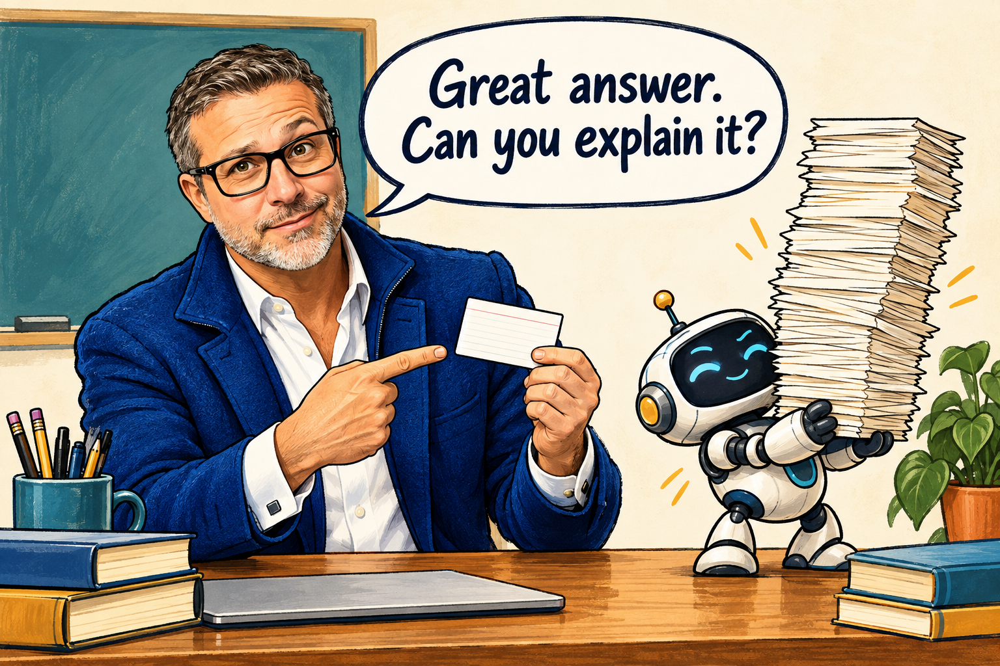
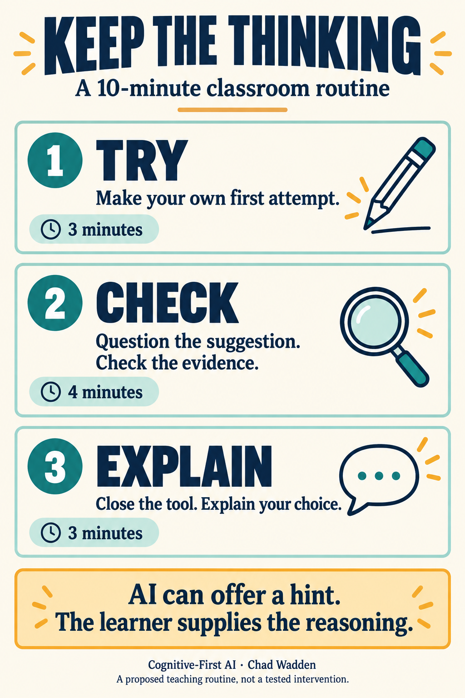

The classroom problem
A polished answer can arrive in seconds. Knowing whether someone understands it takes longer.
Welcome to Cognitive-First AI for High Schools. This newsletter starts with a practical question: where could AI remove some work for us while leaving the important thinking with our students? You do not need to know about agents, coding or complicated prompts to begin. A prompt is simply the instruction or question you give an AI tool.
AI in plain English
Generative AI produces new text, images or other material in response to instructions. Treat its response as a suggestion to examine. A fluent explanation is not a checked explanation, and a complete answer is not automatically evidence of learning.
One example is ChatGPT study mode, announced by OpenAI on July 29, 2025. OpenAI describes a tool that offers questions, hints and checks for understanding. Its announcement also acknowledges mistakes and inconsistent behaviour. This is a dated example of an AI feature, not this week’s breaking news or independent evidence that it improves learning. [R1]
A high-school example
Imagine a teacher preparing a short lesson about evidence. They ask an AI tool to write a plausible conclusion from a small, fictional dataset. Before class, the teacher checks the response and decides which weakness students should notice.
Students first write their own explanation. Then they examine the supplied answer, identify what the evidence supports and correct an overclaim. Finally, the answer disappears and students explain their decision independently. AI helps prepare something to think about; students still do the interpreting.
The companion activity linked below gives you the dataset, deliberately flawed example and worked notes. You can use it as written without opening an AI tool or creating student accounts.

Cognitive Safety Box
Learning outcome: distinguish an observed relationship from a claim that one thing caused another.
Thinking students retain: noticing the pattern, questioning the claim, choosing evidence and explaining a correction.
Where AI may help: preparing an example or suggesting a question for the teacher to check.
Evidence students provide: an initial answer, an annotated correction and a short explanation without the supplied answer visible.
Teacher decisions: whether the material fits the class, which support is needed and what counts as sufficient understanding. A model does not make the assessment decision.
Try it this week
Use the ten-minute “Try → Check → Explain” activity included with this issue.
Try, three minutes: show the fictional data and ask students to write one careful conclusion before revealing the sample answer.
Check, four minutes: reveal the deliberately overconfident answer. In pairs, students mark the unsupported claim and rewrite it using evidence from the table.
Explain, three minutes: hide the sample answer. Students give a two-sentence explanation of why their correction is stronger. Keep the data visible if needed; the point is to check reasoning rather than memory for numbers.
If writing is a barrier, accept a brief oral explanation or labelled diagram. Keep the reasoning demand the same. This routine is my proposed classroom application, not a tested intervention.

From Research to Practice
Bastani and colleagues studied nearly a thousand high-school mathematics students using two GPT-4 tutoring designs. Their 2025 paper reports that AI assistance improved practice performance, but the unrestricted version was associated with worse performance when help was removed. Learning-focused safeguards largely reduced that negative effect. [R2]
This was a mathematics study of particular tools. It does not establish that every AI use helps or harms every learner. My practical takeaway is narrower: make room to see what students can explain when the assistance is gone. The activity above applies that question to evaluating evidence; the study did not test this worksheet or ChatGPT study mode.
Limits and cautions
Use tools permitted by your school, check factual output and keep student names, identifiable work and confidential information out of prompts. If access is uneven or policy is unclear, use the supplied paper version. Start small enough that preparing and checking the example does not create more work than it saves.
Staffroom question
Where in your subject would “show me your reasoning without the suggested answer” reveal something a finished product might hide?
— Chad Wadden
Sources
[R1] OpenAI. July 29, 2025. Introducing study mode. Sections “Key features” and “Limitations and what’s next.” Vendor description, checked September 13, 2026.
[R2] Hamsa Bastani and colleagues. June 25, 2025. Generative AI without guardrails can harm learning: Evidence from high school mathematics. PNAS 122(26), e2422633122. Abstract reviewed via publisher-deposited Crossref metadata; full paper not reviewed for this issue.
The Assignment Makeover: Same Learning Goal. Better Evidence. →